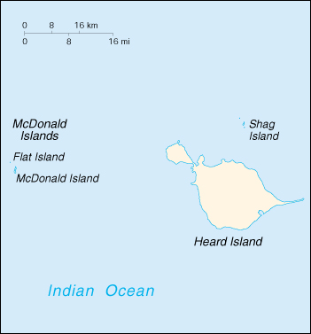

![[Country Flag of Heard Island and McDonald Islands]](../flags/hm-lgflag.jpg)
| Heard Island and McDonald Islands (territory of Australia) |
|
       |  | |
| Geography |
Location: Southern Africa, islands in the Indian Ocean, about two-thirds of the way from Madagascar to Antarctica
Geographic coordinates: 53 06 S, 72 31 E
Map references: Antarctic Region
Area:
total:
412 sq km
land:
412 sq km
water:
0 sq km
Area - comparative: slightly more than 2 times the size of Washington, DC
Land boundaries: 0 km
Coastline: 101.9 km
Maritime claims:
exclusive fishing zone:
200 nm
territorial sea:
3 nm
Climate: antarctic
Terrain: Heard Island - bleak and mountainous, with a quiescent volcano; McDonald Islands - small and rocky
Elevation extremes:
lowest point:
Southern Ocean 0 m
highest point:
Big Ben 2,745 m
Natural resources: none
Land use:
arable land:
0%
permanent crops:
0%
permanent pastures:
0%
forests and woodland:
0%
other:
100%
Irrigated land: 0 sq km (1993)
Natural hazards: Heard Island is dominated by a dormant volcano called Big Ben
Environment - current issues: NA
Geography - note: primarily used for research stations
| People |
Population: uninhabited (July 2000 est.)
| Government |
Country name:
conventional long form:
Territory of Heard Island and McDonald Islands
conventional short form:
Heard Island and McDonald Islands
Data code: HM
Dependency status: territory of Australia; administered from Canberra by the Department of the Environment, Sport and Territories
Legal system: NA
Diplomatic representation in the US: none (territory of Australia)
Diplomatic representation from the US: none (territory of Australia)
Flag description: the flag of Australia is used
| Economy |
Economy - overview: no economic activity
| Transportation |
Ports and harbors: none; offshore anchorage only
| Military |
Military - note: defense is the responsibility of Australia
| Transnational Issues |
Disputes - international: none